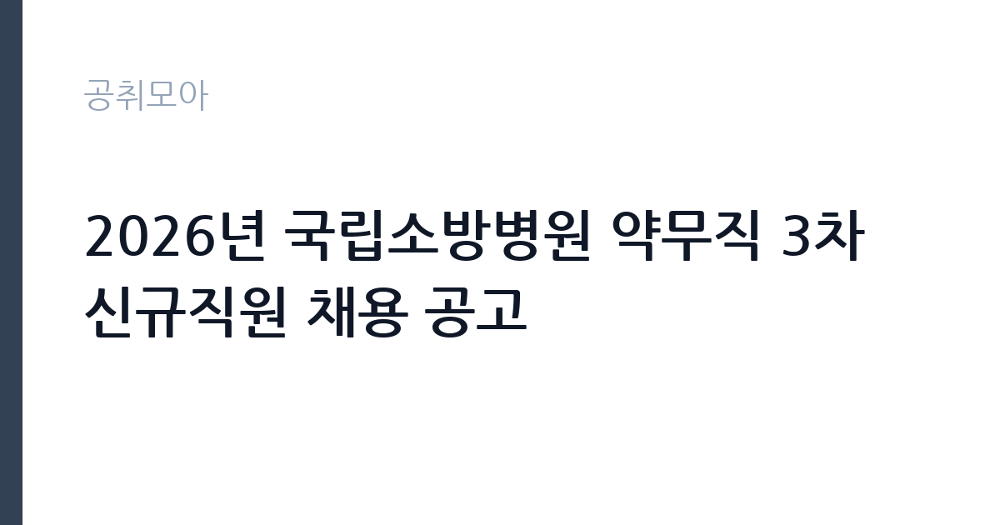

[공공기관] 2026년 국립소방병원 약무직 3차 신규직원 채용 공고
국립소방병원 · 충북 · 마감 2026-10-06 (D-13) · 출처 나라일터

한눈에 보는 모집 조건
| 기관 | 국립소방병원 |
|---|---|
| 공고명 | 2026년 국립소방병원 약무직 3차 신규직원 채용 공고 |
| 고용형태 | 정규직 |
| 근무지 | 충북 |
| 게시일 | 2026-09-23 |
| 마감일 | 2026-10-06 (D-13) |
지원자격, 이렇게 읽으세요
- 약무직 4급 약사 2명 약무직 5급 약사 3명
- 접수 ~2026-10-06 마감
- 세부 조건은 원문 공고문 확인
약사 면허 소지가 기본 요건이며 4급과 5급 직급별로 요구하는 경력과 자격이 다릅니다. 세부 응시자격과 우대사항, 결격사유는 원문 공고문에서 반드시 확인하셔야 합니다. 병원약국 실무 경력자는 직급별 요건을 대조해 지원 직급을 정하시기 바랍니다.
이 공고의 포인트
이 공고의 배경이 중요합니다. 국립소방병원은 2025년 8월 개원한 302병상 규모 종합병원으로 개원 초기라 인력이 계속 확충되고 있습니다. 언론 보도에 따르면 의사 충원에도 어려움을 겪을 만큼 지방 공공병원의 구인난이 이어지고 있어 약사 채용의 문도 상대적으로 넓게 열려 있습니다. 개원 병원의 초기 멤버로 참여한다는 경험 자체가 경력 자산이 됩니다. 약사 5명 가운데 4급 2명과 5급 3명으로 직급이 나뉘어 있어 경력에 맞는 직급을 선택할 수 있는 점도 장점입니다.
전형은 어떻게 진행되나
온라인 지원페이지를 통한 접수 후 서류심사와 면접심사가 이어질 것으로 예상됩니다. 접수 마감시각이 10월 6일 오전 11시로 이른 편이니 마감일 접수는 피하시기 바랍니다. 세부 전형 단계와 제출서류는 원문 공고문에서 확인하시기 바랍니다. 문의처는 043-931-3362입니다.
원문에서 확인한 전형 방식
○ 모집분야 : 총 2개 분야 정규직 5명 ○ 선발직급 : 채용 분야별 상이 ○ 고용형태 : 정규직 ○ 자격요건 : 채용 분야별 상이 ○ 접수기간 : 2026년 9월 23일 ~ 2026년 10월 6일 11:00까지 ○ 응시방법 : 온라인 지원페이지를 통한 접수(https://recruit.incruit.com/fhna/) ○ 문의처 : 043-931-3362
이런 분께 추천해요
- 약사 면허를 보유하고 공공병원에서 안정적으로 근무하고 싶은 분께 적합합니다.
- 병원약국 실무 경력을 살려 개원 병원의 약제 시스템을 만들어가고 싶은 분께 추천합니다.
- 충북 음성 혁신도시 근무가 가능한 분께 어울립니다.
지원 전 체크리스트
- 지원 직급의 자격과 경력 요건을 원문에서 확인했습니다.
- 접수 마감시각이 10월 6일 11시임을 확인하고 미리 제출합니다.
- 약사 면허증과 경력증명서 등 증빙서류를 준비했습니다.
- 온라인 지원페이지 접수 방식을 사전에 점검했습니다.
모집 일정과 제출 타이밍
접수기간은 9월 23일부터 10월 6일까지 약 2주입니다. 3차 채용 공고인 만큼 앞선 차수에서 남은 정원을 채우는 성격이 있어 결원 충원이 시급할 수 있습니다. 서류 준비를 서둘러 접수 첫 주에 제출하시는 것을 권합니다.
직무 이해하기: 공공기관
국립소방병원 약무직은 19개 진료과 302병상의 입원과 외래 조제, 복약지도, 의약품 관리, 임상약제 업무를 담당합니다. 소방공무원 전문 진료라는 설립 취지에 따라 화상과 외상, 재활 관련 약제 수요가 많은 것이 특징입니다. 개원 초기라 약제정보 시스템과 업무 프로세스를 함께 정립해가는 역할을 맡게 됩니다.
자기소개서 작성 팁
자기소개서에서는 병원약국 실무 경험과 복약지도 사례를 구체적으로 쓰시기 바랍니다. 조제 오류를 막은 경험과 다제약물 환자 관리, 의료진 협업 사례가 좋은 소재가 됩니다. 공공병원과 소방 전문 진료의 취지에 대한 이해를 함께 보여주시면 설득력이 높아집니다.
면접 준비 포인트
면접에서는 조제 실무 지식과 응급 의약품 대응 경험을 질문받을 가능성이 큽니다. 마약류 관리와 항생제 적정 사용, 복약지도 원칙을 정리해 두시기 바랍니다. 당직과 야간 대응 가능 여부도 자주 묻는 항목이니 본인의 계획을 정리해 두시기 바랍니다.
급여·근무조건 읽는 법
약무직 4급과 5급의 구체적인 보수 금액은 공고문에 따른 것으로 원문에서 확인하시기 바랍니다. 참고로 국립소방병원 간호사 초봉은 약 4,000만원 내외 수준이라는 온라인 정리 게시물이 있으나 공식 수치가 아니며 약사 직급의 보수와 다를 수 있습니다. 공공병원은 기본급 외에 각종 수당이 별도로 지급되는 구조이므로 근로조건 안내를 꼼꼼히 확인하시기 바랍니다. 약사 직급은 4급과 5급으로 나뉘며 호봉과 경력에 따라 보수가 정해지니 본인 경력 기준의 정확한 금액은 원문과 합격 후 근로계약서에서 확인하시기 바랍니다.
자주 묻는 질문
- 4급과 5급의 차이는 무엇인가요?
직급별로 요구하는 경력과 자격, 담당 업무의 책임 범위가 다릅니다. 세부 요건은 원문 공고문의 모집분야표에서 확인하시기 바랍니다. - 근무지는 어디인가요?
충북 음성 혁신도시에 위치한 국립소방병원입니다. 2025년 8월 개원한 국내 최초 소방 전문 공공병원입니다. - 접수 마감시각이 따로 있나요?
10월 6일 오전 11시까지입니다. 오후 마감이 아니므로 미리 제출하시기 바랍니다.
함께 보면 좋은 공고
[공공기관] 발전공기업 통합실무지원단장 채용공고 — 마감 2026-10-08[공공기관] (재)인천광역시부평구문화재단 대표이사 채용 공고 — 마감 2026-10-13[공공기관] [설악산] 설악산국립공원 기간제 직원[환경관리(한시인력)] 채용 공고 — 마감 2026-10-01출처: 나라일터 공개정보를 바탕으로 공취모아가 정리한 안내글입니다. 모집 조건·일정은 변경될 수 있으니 지원 전 반드시 원문 공고문을 확인하세요. 본 글은 정보 제공용이며 합격을 보장하지 않습니다.